Free eBook & Neuroscience
श्रीदुर्गासप्तशती (सम्पूर्ण १३ अध्याय): शुद्ध हिन्दी PDF निःशुल्क डाउनलोड
त्रुटिरहित और सुस्पष्ट हिन्दी अनुवाद में सम्पूर्ण दुर्गासप्तशती PDF डाउनलोड करें। कवच, अर्गला, कीलक व ७०० श्लोकों का विज्ञान।
Typically replies within minutes
नमस्ते! हम आपकी क्या सहायता कर सकते हैं?
Instant WhatsApp Consultation
+91 83185 13814
Explore our collection of neuroscience & genetics-backed Vedic astrology articles, सिद्ध स्तोत्र (Free PDFs), and accurate horoscope forecasts.
हमारे फ्री इंटरएक्टिव टूल्स से जानें अपना लग्न, अष्टकवर्ग, चाल्डियन अंक और सिद्ध रुद्राक्ष उपाय।
त्रुटिरहित और सुस्पष्ट हिन्दी अनुवाद में सम्पूर्ण दुर्गासप्तशती PDF डाउनलोड करें। कवच, अर्गला, कीलक व ७०० श्लोकों का विज्ञान।
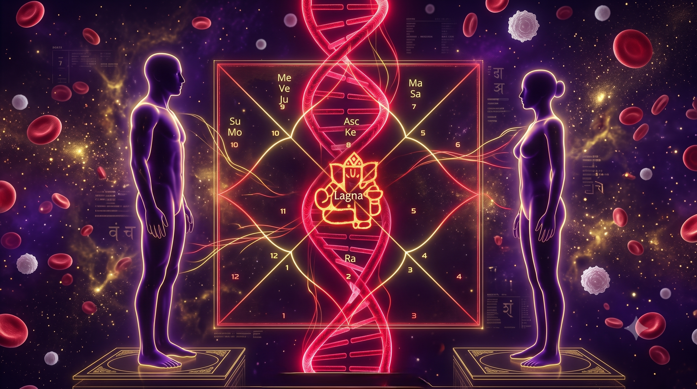
नाड़ी दोष, Rh-Factor (Erythroblastosis Fetalis) और ब्लड ग्रुप क्लैश का असली वैज्ञानिक और जेनेटिक सच।
क्वांटम फिजिक्स और बायो-मैग्नेटिज्म के अनुसार नज़र लगने और नमक-फिटकरी के उपाय का विज्ञान।
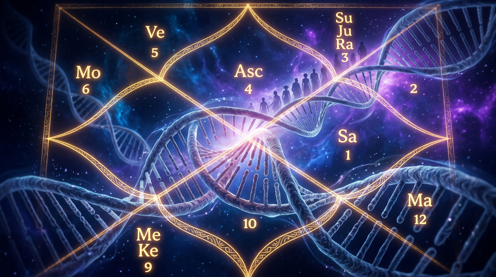
जानें कैसे पितृ दोष असल में 'Epigenetics' (Transgenerational Trauma) और जेनेटिक मेमोरी का खेल है।
लक्ष्मी चालीसा और इन्द्र कृत अष्टकम से नर्वस सिस्टम (RAS) को 'अमीरी' के लिए री-प्रोग्राम करें।
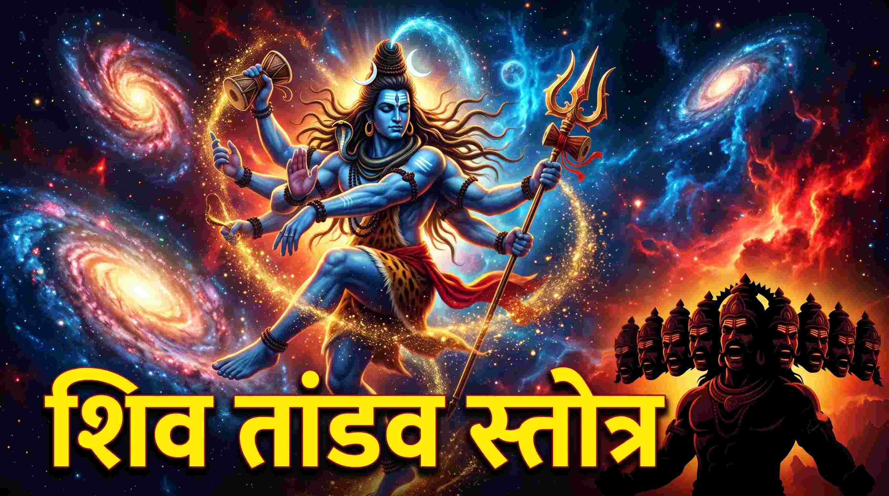
रावण रचित 15 श्लोकों का ब्रह्मांडीय एल्गोरिदम जो आपके मस्तिष्क के तनाव को भस्म करता है।
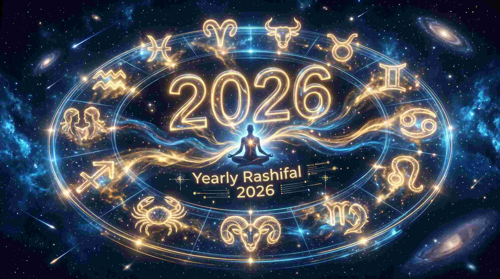
वर्ष 2026 में करियर, स्वास्थ्य और आर्थिक स्थिति के लिए 12 राशियों का वार्षिक भविष्यफल।
राजा दशरथ रचित शनि स्तोत्र - साढ़ेसाती, कोर्टिसोल (Cortisol) और ढैय्या से मुक्ति का अचूक वैदिक उपाय।
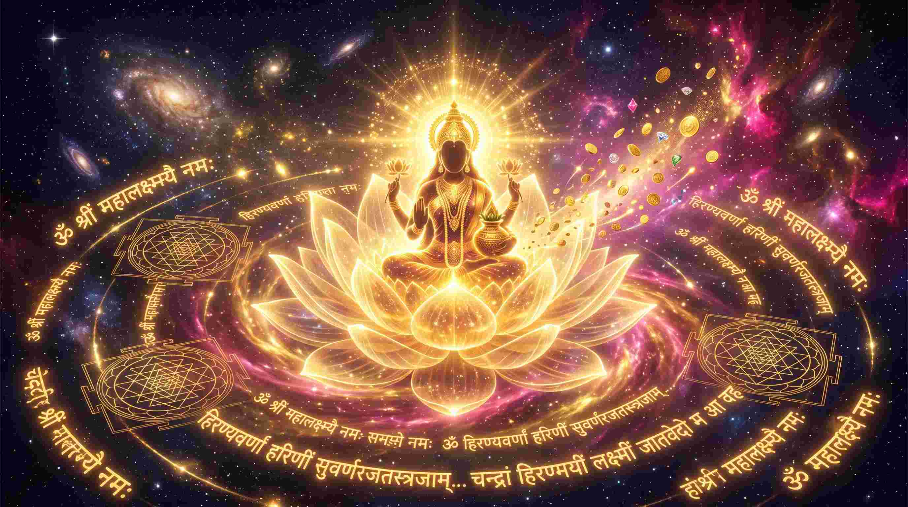
ऋग्वेद के श्री सूक्त के 16 श्लोकों का पाठ और मस्तिष्क से 'दरिद्रता' मिटाने का विज्ञान।
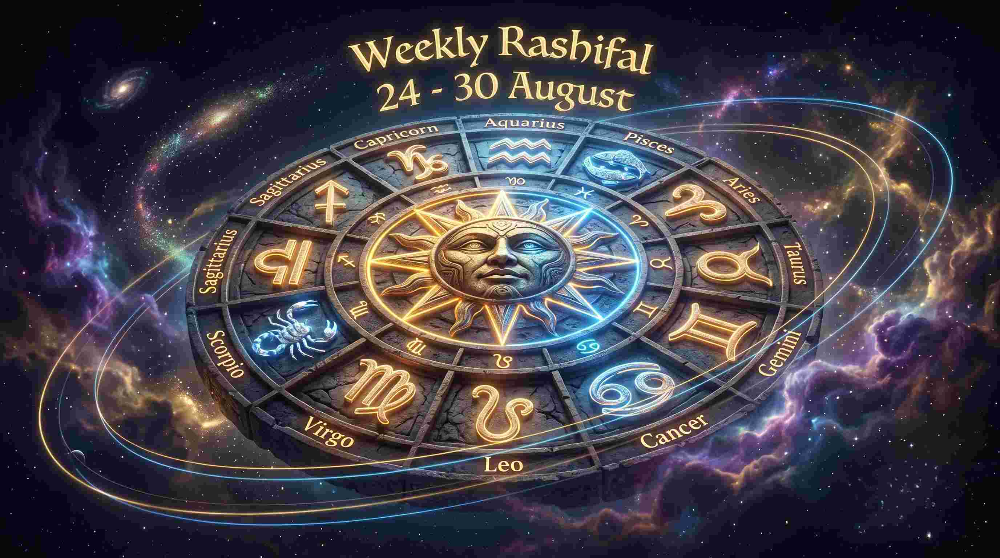
सूर्य-सिंह संक्रांति और चंद्र गोचर का करियर, स्वास्थ्य और वित्त पर विस्तृत प्रभाव।
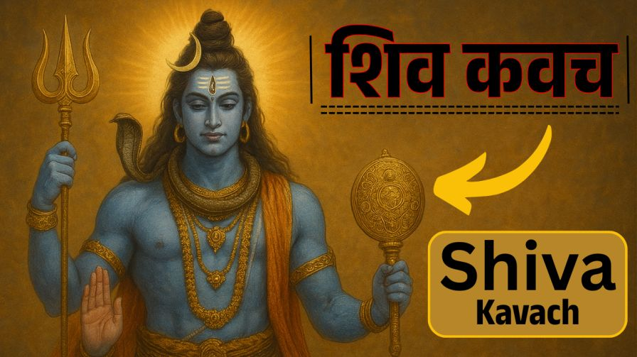
शिव कवच का सम्पूर्ण पाठ, हिन्दी अर्थ और सभी भयों व संकटों से मुक्ति का साधन।
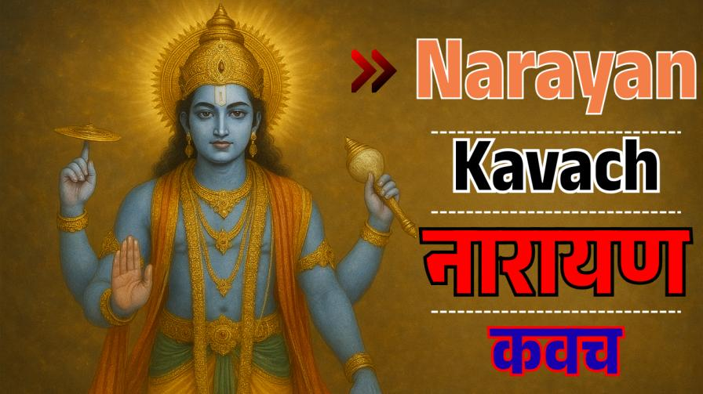
श्रीमद्भागवत पुराण में वर्णित नारायण कवच का विस्तृत ज्ञान और पाठ विधि।
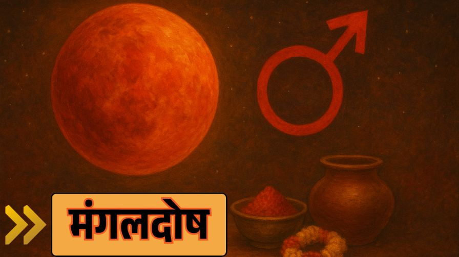
कुण्डली में मंगल दोष के कारण, प्रभाव और अंगारक स्तोत्र से सम्पूर्ण निवारण।
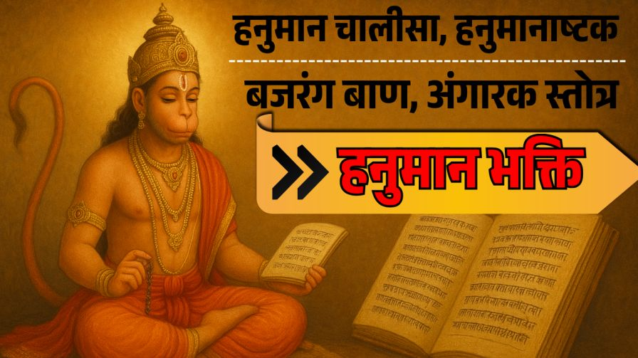
संपूर्ण हनुमान चालीसा, हनुमान बाण, हनुमान अष्टक और अंगारक स्तोत्र का विस्तृत संग्रह।
विद्यार्थियों और ज्ञानार्जन करने वाले साधकों के लिए स्मरणशक्ति जाग्रत करने वाला वैदिक सूक्त।

माता अन्नपूर्णा की स्तुति जो घर में कभी अन्न-धन की कमी नहीं होने देती।
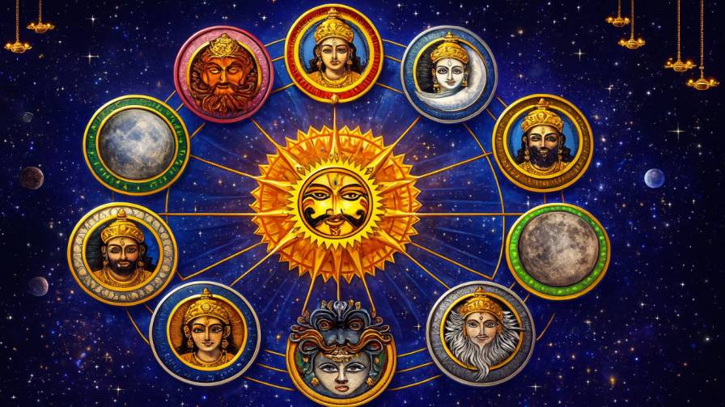
नौ ग्रहों को शांत करने और उनके नकारात्मक प्रभावों को दूर करने वाला दिव्य स्तोत्र।
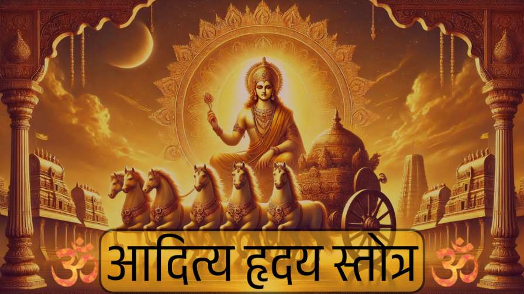
रामायण का वह दिव्य स्तोत्र जिसने श्रीराम को विजय दिलाया और आत्मबल बढ़ाया।
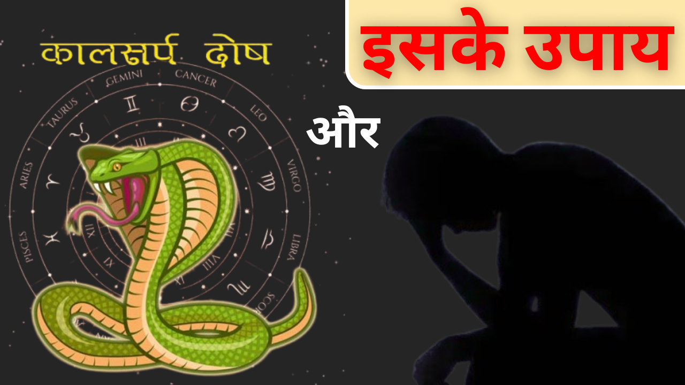
कालसर्प दोष के 12 प्रकार, जीवन पर प्रभाव और इसके प्रामाणिक वैदिक उपाय।
जानिए केतु दोष क्या है, यह जीवन को कैसे प्रभावित करता है और इसके निवारण।
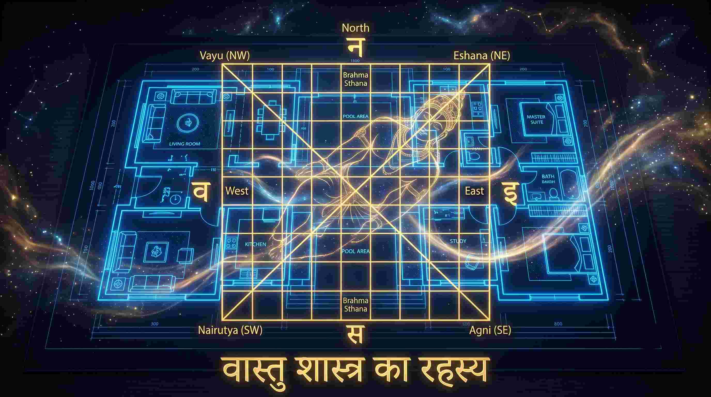
जानें कैसे वास्तु आपके घर में सुख-समृद्धि और खुशहाली ला सकता है।
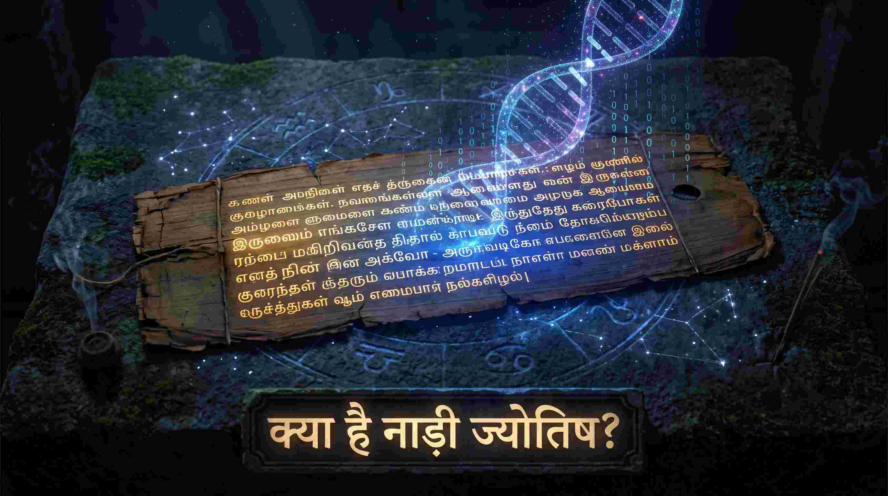
तमिलनाडु की प्राचीन नाड़ी ज्योतिष पद्धति से जन्म के रहस्यों की सटीक जानकारी।
प्रेम, करियर, स्वास्थ्य और वित्त—2025 का संपूर्ण वार्षिक राशिफल।
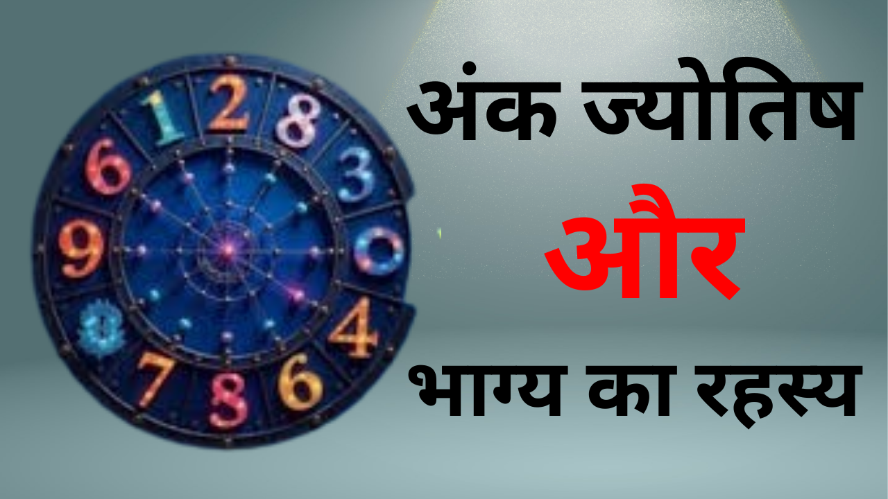
क्या आपका भाग्य आपके जन्मांक से जुड़ा है? आइए जानते हैं अंक ज्योतिष का महत्व।
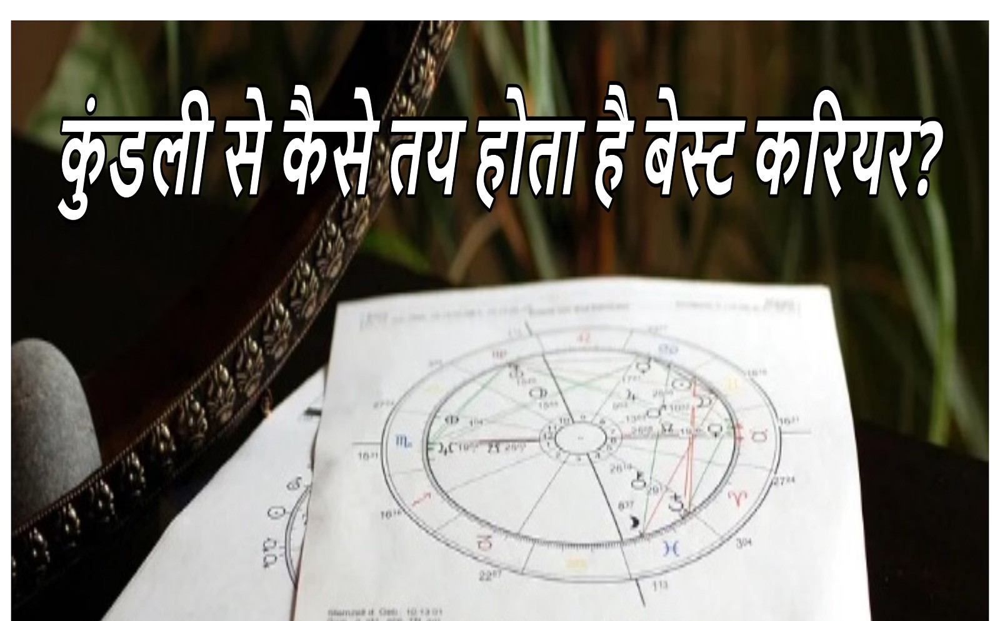
क्या आपकी कुंडली आपको सही करियर की दिशा दिखा सकती है? विस्तार से जानिए।
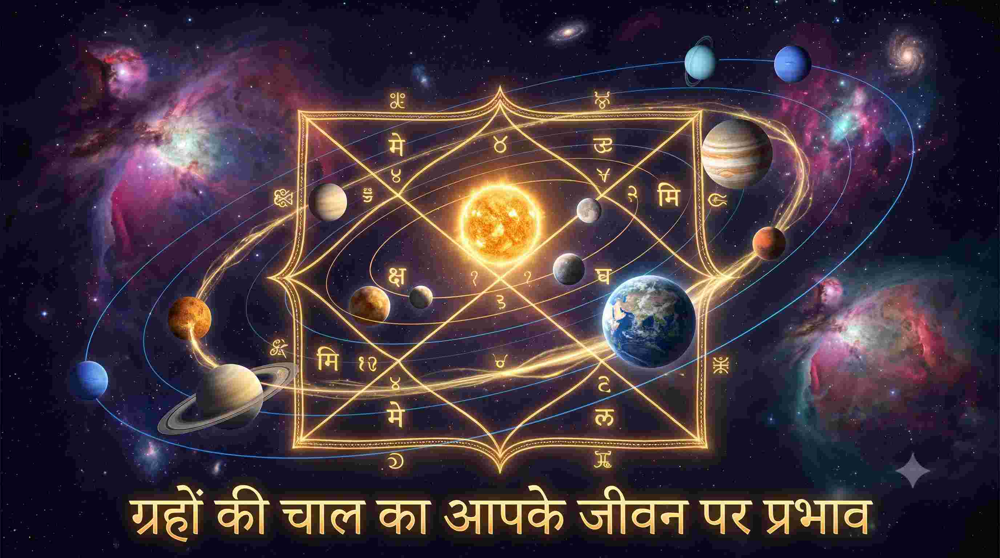
जानें कैसे ग्रहों की गति आपके रोजमर्रा के जीवन और करियर को प्रभावित करती है।
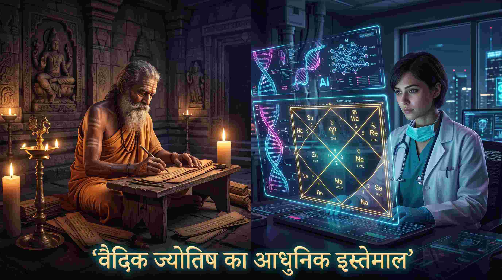
कैसे प्राचीन वैदिक ज्योतिष आज के आधुनिक युग में आपके जीवन को बेहतर बना सकता है।
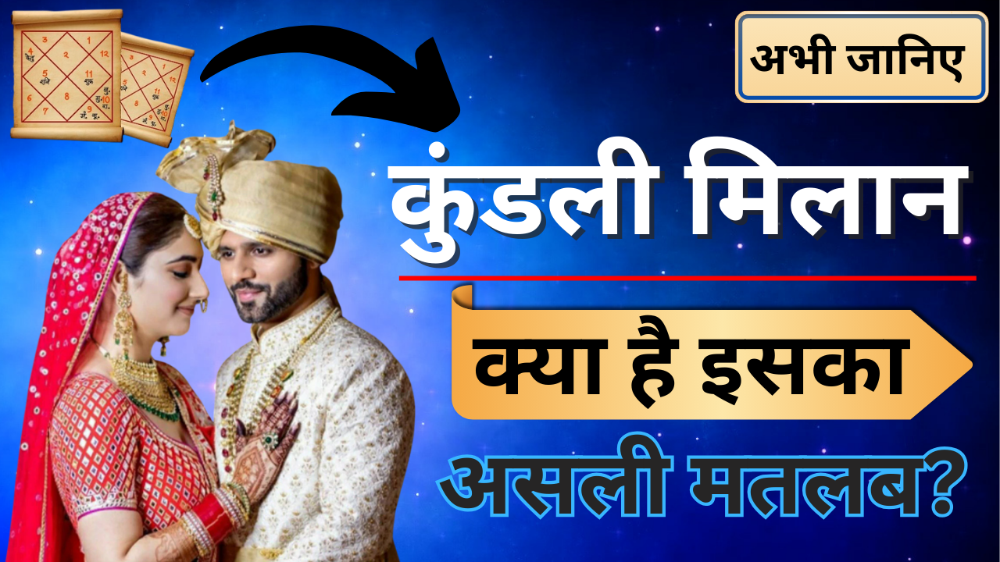
जानें कैसे कुंडली मिलान आपको सही जीवनसाथी चुनने में मदद करता है।
कृपया दूसरा कीवर्ड सर्च करें या 'सभी (All 28)' टैब पर क्लिक करें।
साप्ताहिक राशिफल, नए मेडिकल एस्ट्रोलॉजी ब्लॉग, और निःशुल्क सिद्ध स्तोत्र PDF सीधे अपने WhatsApp पर प्राप्त करें।